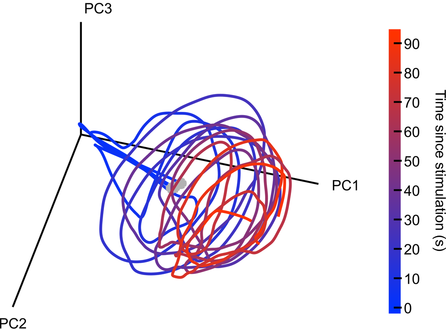

|
By David Mehler & Nils Muhlert Mark Humphries The OHBM is dedicated to understanding the anatomical and functional organization of the human brain using neuroimaging. But how to best use brain-activity measurements, including human neuroimaging, to understand computational mechanisms remains an open problem. “Mapping the brain does not by itself reveal the brain’s computational mechanisms” says Niko Kriegeskorte, past chair of the OHBM Communications Committee. “Therefore one of the strategic priorities in the OHBM Communications Committee has been to explore the interaction between computational neuroscience & human neuroimaging.” Here, we had the chance to discuss the current state and future of computational neuroscience with Mark Humphries, senior research fellow at the University of Manchester, Chair of Computational Neuroscience at the University of Nottingham, and talented blogger. We found out about research environments in different countries, mindful language use in neuroscience, Mark’s outlook on the future of network neuroscience, and his top three tips for those starting out in computational neuroscience. Nils Muhlert (NM): Can you tell us a bit about your career path - were you first interested in computing, or in neuroscience? Also, your work has seen you move between the UK and France - have you found different approaches to research in these countries? Mark Humphries (MH): I’m of the generation that grew up programming their home computers - their C64s, Spectrums, and BBC Micros - so computing was always there. As a kid I also loved chemistry. Originally I wanted to do Chemical Engineering at university, but it turned out that A-Level Chemistry was both hard and boring. So when I came across the mysterious “Cognitive Science” degree, promising computing, AI, and the brain, I signed up like a shot. In effect, I’m one of the few who was trained in computational neuroscience from my first year at undergraduate level. That degree was followed by a PhD and postdoctoral work at Sheffield, with the quietly wonderful Kevin Gurney. Not quite the straight run it sounds: disillusioned and exhausted by the end of the PhD, I went off to freelance web design and software engineering. That lasted a year before I was tempted back by the offer of a post-doc. My long stint at Sheffield was followed by three years in Paris at ENS. Both teams of computational neuroscientists, with radically different approaches. Sheffield were neuroscience-first, circuit modellers: build a model of a brain region, study its dynamics, and infer its function. Paris were theoreticians first: propose and study general principles for how computations could be done by the brain (memory, inference etc), then worry about the details of specific circuits later, if at all. In my experience, the French research system, dominated by the CNRS and INSERM, is essentially just part of their civil service system. So you can have a job for life, but getting financial support to do your research can be an absolute pain. Theorists in all fields can thrive, of course. (ENS has an extraordinary maths department: the Bourbaki group were based there, and they’ve had five Fields medalists). The UK research system more clearly supports fundamental science. NM: In a recent blog post on connectomes, you highlight some of the many factors influencing the spiking of a single neuron. In human neuroimaging, we typically summarise activity at the scale of cubic millimetres, with each voxel containing tens or hundreds of thousands of neurons in different cortical layers. How much cross-talk do you see between cellular systems neuroscience and human neuroimaging, and how much do you think understanding at one level currently constrains understanding in the other? MH: The neuroscience of detailed neuron types - their physiology, receptors, transmitters, gene expression, and so on - often has little constraint on systems neuroscience studies of large populations of neurons. Many multi-neuron recordings from cortical regions can only hazard a guess at what layer they are recording in, never mind whether the recorded neurons are Martinotti or ViP interneurons or whatever. I think this lack of identifying neurons has played a large role in driving the take-up of calcium imaging, where we can at least identify some subtypes of neurons (typically 1 or 2), despite the obvious disadvantage of recording something (calcium) that is only partially related to the thing we’re interested in (the spiking of neurons). What’s particularly missing is the constraints of anatomy - the wiring between individual neurons - on the activity we’ve recorded from those neurons. But that will come. In a handful of specialised circuits, this information is being combined. For example, in studies of the mouse retina, the type and position of neurons has been used to constrain classifications of large population recordings. And in tiny animals, like Drosophila larvae (maggots to the rest of us) and C Elegans, the details of wiring and neuron types have been combined with large-scale imaging to reveal deep insights into how brains could work. NM: Marsel Mesulam revealed that students requesting higher field strength MRIs are asked “what would you do if you could record from every neuron in the brain?” This thought experiment is now an ambition for international research projects. How do you feel network neuroscience could sensibly use this massive amount of data? A question that has occupied much of my thinking, but to which I’m no closer to a good answer. We have passed the milestone of recording every neuron from a simple nervous system. But as I wrote at the time, it was a cool study from which we learnt very little of consequence. That said, everything that brains do, they do through the collective action of hundreds to millions of neurons. And we lack well-established theories for what that collective action means, or how to interpret changes to it. In the absence of theory, the gotta-catch-them-all philosophy of recording every neuron is seductive: let’s get the data we think we will need one day, and wait for theory to catch up. Fortunately, ideas are emerging about how we can sensibly use this data. There’s some great recent work on how we can tell whether there’s anything special about the joint activity of many neurons: whether it is just the expected result of lots of individual neurons tuned to different properties of the world; or if the joint activity really conveys more information than the individual neurons summed together. And we’re starting to get a handle on how to understand the dimensionality of that joint activity: how much redundancy there is between neurons, how that redundancy differs between brain regions (and between different brains), and what that means. NM: In another of your blog posts, you criticize media misinterpretations of dopamine as representing the ‘reward system’ of the brain. How does your own work feed into this - and at what point did you feel a general education piece was warranted? MH: The tipping point was seeing “Dopamine dressing” in The Guardian‘s Style section. As though dopamine neurons give a damn about what you wear. Endless publications call dopamine the “reward system”, when it is not. And it’s particularly embarrassing when such language routinely appears in august publications like Nature. So I thought that it’d be useful for everyone to have a simple, accessible, concise explanation that dopamine neurons signal an error, not reward. And then we can all just point our undergraduates, friends, family, and editorial staff at esteemed publications to that post, and save ourselves the trauma. Dopamine has been around in my research since the first days of my PhD. For years my work was primarily on the basal ganglia, and the striatum - the massive input nucleus of the basal ganglia - is where the dopamine neurons send their dopamine. So we include the effects of dopamine in all our models. In Paris I spent a couple of years analysing dopamine neuron firing in a project that never saw the light of day. More recently, I helped Kevin Gurney achieve his mammoth computational account of how dopamine teaches the basal ganglia to select actions. Dopamine has haunted me for my entire career... David Mehler (DM): Richard Feynman used to stress the difference between “Knowing the name of something and knowing something”. In a similar spirit, you have critically assessed whether we put too much faith in named brain structures, giving examples why these should not be taken at face value. What advice do you have for students and ECRs, whose experience of Neuroscience may consist wholly of learned brain regions with set functions? MH: Read more than just about your brain region. And internalise the idea of degeneracy: brains have many solutions to the same problem. If we work on only one brain region, it is easy to fall into the trap of thinking that one brain region does everything. Just being aware of the thinking about brain regions other than your own will help not take anything at face value. In my own fields, it is easy for basal ganglia researchers to fall into the trap of claiming that it is responsible for “action selection”. But this patently can’t be true: there are multiple systems that select actions in the brain, from spinal reflexes, up through the brainstem, midbrain, and other sub-cortical structures - the amygdala can select fear responses just fine on its own. DM: A recent study from your lab, in collaboration with Angela Bruno & Bill Frost from the Chicago Medical School, provides fascinating insight into how neural populations orchestrate their activity when coordinating movement: while their combined output converges to a similar pattern (an attractor), activity of individual neurons is not stable over time. What does this finding imply in your view for our understanding of functional connectivity (e.g. between neurons or neural populations)? It means that functional connectivity is an epiphenomenon. The correlations between individual neurons are imposed by the dynamics of the whole circuit in which they reside. Those dynamics obey certain properties that emerge from the wiring of the whole circuit and the excitability of the individual neurons. But it is very useful to study functional connectivity of neurons: mapping the correlations between neurons is so much easier than trying to infer the underlying attractor, or other form of dynamical system. And changes to those correlations imply a change to the underlying attractor. Indeed, we use this approach all the time. We just need to be mindful that those correlations are a read-out, an observable property, of the circuit’s dynamics. Functional connectivity at the level of whole brain regions, of MEG/EEG and fMRI, is a different kettle of fish, of course. On this scale, correlated activity is telling us something about the distribution of how things are represented across the brain in very large neural populations, with tens of thousands to millions of neurons in a single time-series. Instability of correlations over time for these time-series would suggest entire neural populations that wink on or off as needed. And dynamical systems analysis has long been applied to EEG data, but usually as a way of looking for changes in gross neural activity - as may precede an epileptic seizure, for example - than as a view of how the brain computes.  Seeing a spiral attractor in neural activity. Activity was recorded from 105 neurons in a sea-slug's motor network during three separate bouts of galloping. There are three lines plotted here. Each line is the low-dimensional projection of those neurons' joint activity during a 90 second bout of galloping, from its onset (grey circle). Each line traces a circular movement whose amplitude decays over time: a spiral. The three lines together trace the same region of this low-dimensional space, indicating that the neurons' joint activity is attracted to the same pattern: the spiral is an attractor. DM: Your work increasingly focuses on dynamic changes in neural networks. What insight do you think this will bring to the field over the next 5-10 years?
MH: We’re going after the idea that the brain encodes information at the level of the joint activity of populations of neurons. In this view, each neuron is a read-out of the joint activity of all the neurons that project to it. That neuron, in turn, is just one small component of the populations projecting to other neurons. So only by looking at the dynamics of the neural network as a whole can we understand what neurons are seeing, and hence what the brain is encoding. A change to those joint dynamics are then the change in what is being encoded: be it a sound, a memory, or a movement. In short: the response of single neurons may be irrelevant to what the brain is doing. DM: … and finally, computational neuroscience is gaining increasing popularity. But starting out may seem daunting. What are your top three tips to get into the field? MH: First, learn to code, properly. To some, this may seem obvious. In my experience most people who’ve come to me with a genuine interest in getting into computational neuroscience have never coded, certainly not seriously. But coding is the day-in, day-out life of the computational neuroscientist, so you won’t get far without deep skills in coding. And by “properly” I don’t mean “you have to learn a proper programming language”, whatever that means. No: properly learning to code means learning the logic of how code is built, independently of the language used: of variable types, indexing, functions, control loops. And learn to comment your code. You know who will love you for commenting your code? You, in a year’s time. Second, ask yourself: What type of computational neuroscience do I want to do? The choices are endless. We can work on scales across the actions of receptors at single synapses; plasticity at single synapses; the intra-cellular signals triggered by receptor activation; the dynamics of a single neuron in all its glory, dendrites and all; the collective dynamics of networks of neurons; of specific brain circuits; right up to the entire brain. And on to read-outs of mass activity, to EEG, MEG, and fMRI, and the functional connections between regions. We can work bottom-up, top-down, or middle-out. We can aim to ask what a specific brain regions does, work out what causes a disorder, or reach for general principles for how neurons compute. We can use algorithms, like machine-learning; simulations of dynamics using differential equations; or pencil and paper to solve equations. What is it you want? Finally, take a Master’s course in computational neuroscience. Both so you can find out if this path is for you; and so that you can be taught the neuroscience by neuroscientists and the computation by computational neuroscientists. Get either wrong, and no one will take you seriously.
2 Comments
2/20/2018 06:24:41 am
Hi,
Nils
2/20/2018 08:57:08 am
Thanks for spotting this - now amended in the response. Your comment will be posted after it is approved.
Leave a Reply. |
BLOG HOME
Archives
October 2022
|
 RSS Feed
RSS Feed